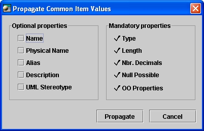

Introducing
the common item

By definition, an item is the smallest element of an organized group
and the adjective
"common" is used with respect to the fact that it applies to several
objects. People creating data models / class models in the same project
are free to use different
names and even different definitions of data elements (attributes /
columns /
fields) to suit their specific
needs. However, when data elements describe the same reality, a common
item
model can be used.
For instance, if several columns are named 'salary', a user can
consider useful to create a common item 'salary' and associate the type
'money' to it. Once the columns are linked to the common item, it is
possible to propagate the money type to all the 'salary' columns (in a
time / in a flash / in a batch).
If the DBA (database administrator) decides to change all the 'money'
types to 'float' by example, then individually
modifying the type of all 'salary' columns in the model
becomes a long, tedious and error-prone task. If the salary columns are
linked to common items, then it is easy to change the common item's
type and to propagate the new type to all the linked columns.
Common
items can be grouped in a common item model. And since you may include
several common item models in a project, you should give each model a
semantic
meaning.
To create a common item model, right-click project,
then choose Add > Common item
model from the pop-up menu.
Creating
a common item and setting its values

To create a common item, right-click a common item model,
then Add > Common Item from the pop-up menu. You can
also add a diagram, and create the common items in a graphical way.
A common item usually has a type, a length and other values that an
attribute, a column or a field has. To set values of a common item, right-click
on a common
item (either in the explorer or in a diagram) and choose Properties
from the pop-up menu.
Linking
a(n) attribute / column / field to a common item model
To link a(n) attribute / column / field to a common item model:
- Select an object (i.e. column) and
click the Properties tool
 .
.
- Click the Common item line of the Value column (white
empty box).
- Choose the common item from the Select a new value window
and click Select.
Creating
a(n) attribute /
column / field from a common
item
Creating
a(n) attribute
/ column / field from a common item:
- From
the explorer, select a common item.
- Hold
down the left mouse button and drag the common item
onto a table, a
view or a class.
- Drop the common item
by releasing the mouse button when
the
target object becomes highlighted and the icon underneath the cursor
becomes '+'.
Propagating
common item values
Once a common item is linked to one or several attributes / columns /
fields, it is
possible to propagate the common items' values to the linked attributes
/ columns /
fields in a batch. To do so, right-click a common item (or on a common
item model to apply propagation to all the common items within the
common item model) and choose Propagate Common Item Values. A dialog
box then appears; it allows to specify which properties will be
propagated to the linked attributes / columns /
fields. The type
profile (type, length, number of decimals and null option) is always
propagated.

Generating
common items
It is possible to generate common items from existing attributes /
columns / fields
in a batch. To do so, right-click a(n) attribute / column / field, a(n)
entity / table / class or
a data model / class model in the explorer (or in a diagram), and
choose Generate Common Items. A dialog box then appears; it is possible
to create a common item per each attribute / column / field, per each
attribute / column /
field having the same name (for instance, if two columns are named
'salary', then only one common item is created), or per type profile
(only one common item per all the columns types DATE, CHAR(10), etc.).

Deleting
orphan common items
When attributes / columns /
fields / fields are deleted
in the modeling process, their common items might remain without being
linked to any attribute / column / field. These common items then
become orphans
and might be useless in the model. It is possible to delete all orphan
common items at a time. To do so, right-click a common item (in the
explorer or in a diagram) or a common item model and choose the Delete
Orphan Common Item(s) option.